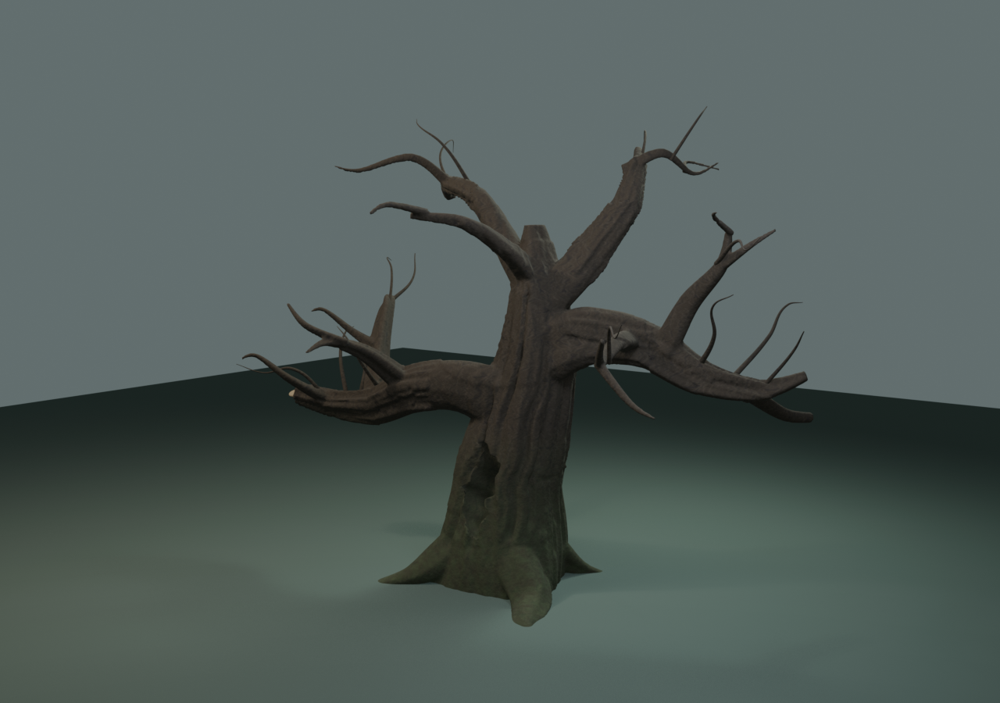
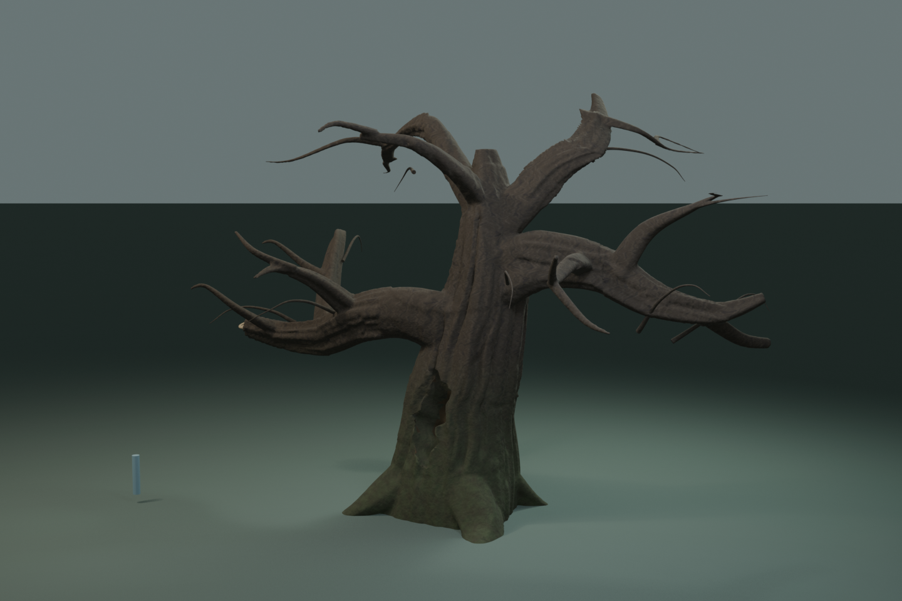
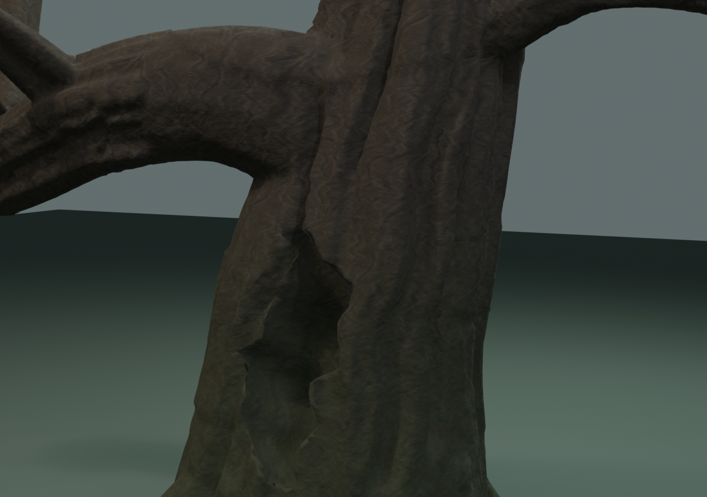
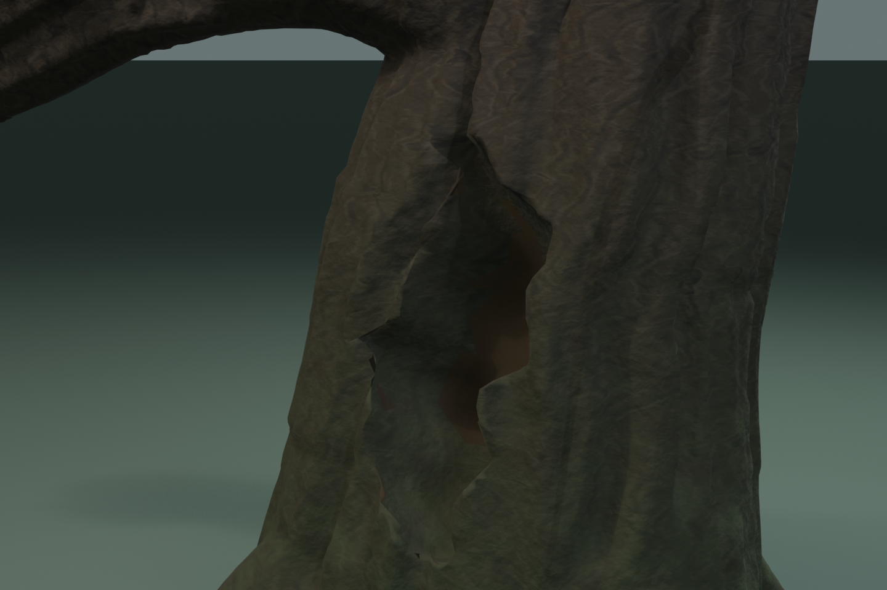
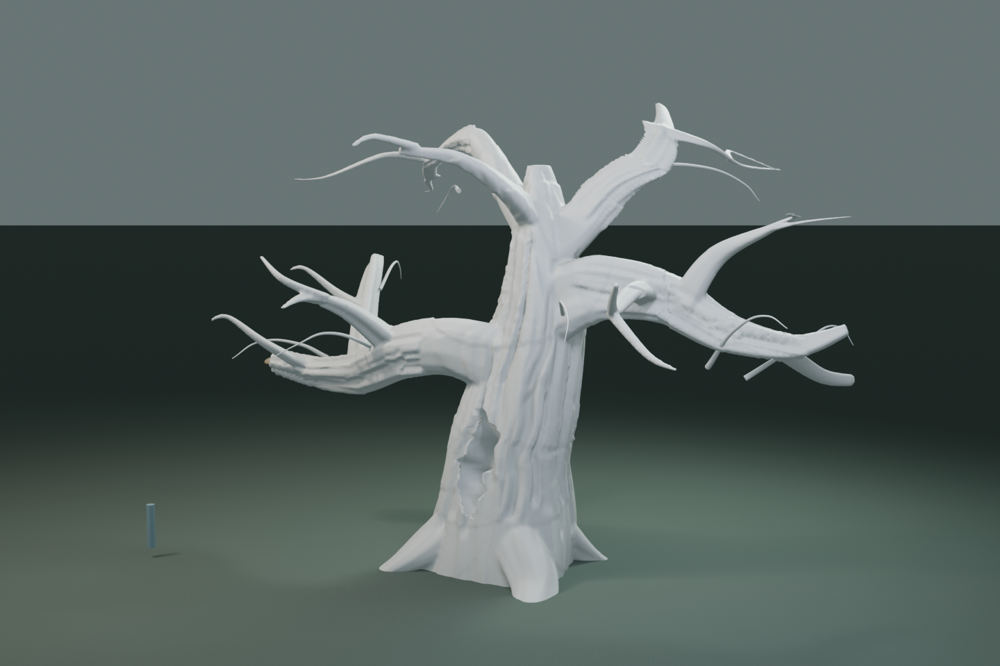

Lumen Swarm / 巨木の造形レビュー
制作中のBlenderスカルプト比較です。どちらも未採用です。 V4は上側の樹冠を低くし、主枝を再変形、細枝の接続を修正しました。素材の光・地面・カメラが完全一致する前後比較ではありません。
全体シルエットと樹皮


幹の腐朽部


造形のみの確認

制作中のBlenderスカルプト比較です。どちらも未採用です。 V4は上側の樹冠を低くし、主枝を再変形、細枝の接続を修正しました。素材の光・地面・カメラが完全一致する前後比較ではありません。




